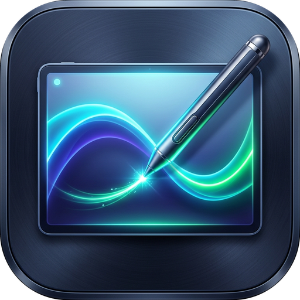

‹
×
presentation_dual_screen.pdf
‹
1 / 2
›
⏮
Frame 1/5
⏭
⏱
00:51
Ultra Vector (600 DPI)
•••
+
Insert
✂
Cut
📑
Duplicate
🔄
Rotate
🗑
Delete
Color
Done
☀️
Current Drawing Color
Applied to Pen, Highlighter, and Shapes
Stroke Width Quick Select:
2px Fine
4px Medium
7px Bold
Palette
Grid
Wheel
Palettes
Style
🔍
◼ AUDIENCE SCREEN BLACKOUT (B to restore)
✕
‹
›
00:00 / 01:30
1.0x
PowerBeamer - Speaker Notes (Detached)
⏱ 188:21
Slide 2 of 2
Synced with Deck
📐 DUAL-SCREEN NOTE SLIDE (pgfpages)
Second Screen
SPEAKER COMMENTS & NOTES
+ Bullet
⏰ Reminder
Clear